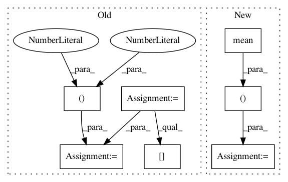

9419d215150bcb2679d5047ab53f88139702ac6e,dipy/reconst/tests/test_dki.py,,_wls_iter,#Any#Any#Any#Any#Any#,113
Before Change
w = np.exp(np.dot(ols_fit, log_s))
result = np.dot(np.linalg.pinv(design_matrix * w[:, None]), w * log_s)
D=result[:6]
tensor=from_lower_triangular(D)
MeanD_square=((tensor[0,0]+tensor[1,1]+tensor[2,2])/3.)**2
K_tensor_elements=result[6:21]/MeanD_square
return decompose_tensors(tensor, K_tensor_elements, min_diffusivity=min_diffusivity)
After Change
// MeanD_square=((tensor[0,0]+tensor[1,1]+tensor[2,2])/3.)**2
// new_line:
MeanD_square = (evals.mean(0))**2
K_tensor_elements = result[6:21] / MeanD_square
// new line:
dki_params = np.concatenate((evals, evecs[0], evecs[1], evecs[2],
K_tensor_elements), axis=0)
out_shape = sig.shape[:-1] + (-1, )
dki_params = dki_params.reshape(out_shape)
// return decompose_tensors(tensor, K_tensor_elements,
// min_diffusivity=min_diffusivity)
// line line:
In pattern: SUPERPATTERN
Frequency: 3
Non-data size: 7
Instances
Project Name: nipy/dipy
Commit Name: 9419d215150bcb2679d5047ab53f88139702ac6e
Time: 2015-07-08
Author: rafaelnh21@gmail.com
File Name: dipy/reconst/tests/test_dki.py
Class Name:
Method Name: _wls_iter
Project Name: nipy/dipy
Commit Name: ed2b80836fb92142143d8b7702d5519761671cf5
Time: 2015-07-08
Author: rafaelnh21@gmail.com
File Name: dipy/reconst/dki.py
Class Name:
Method Name: _ols_iter
Project Name: nipy/dipy
Commit Name: a09d813649375dc159bcf6e1daf98ecc4cf4d980
Time: 2015-07-12
Author: garyfallidis@gmail.com
File Name: doc/examples/viz_slice.py
Class Name:
Method Name: